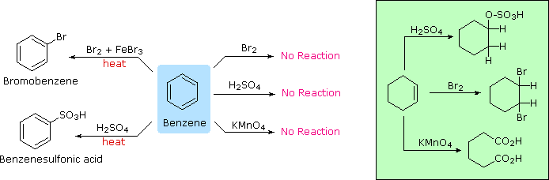
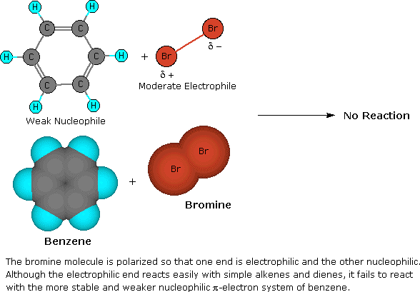
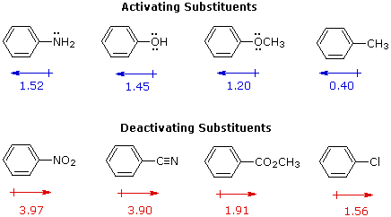
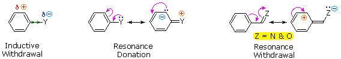
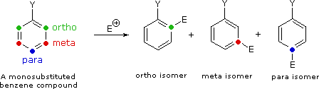
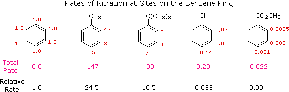
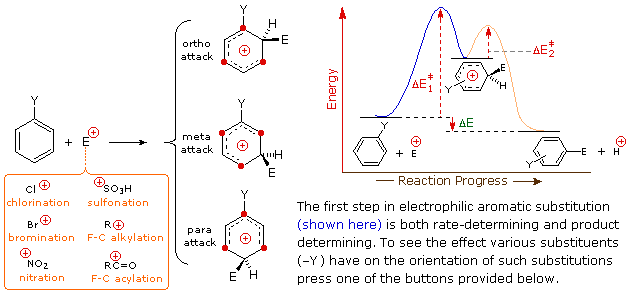
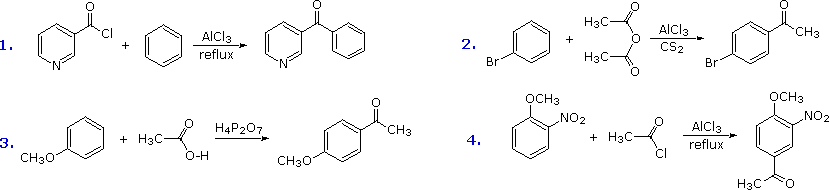
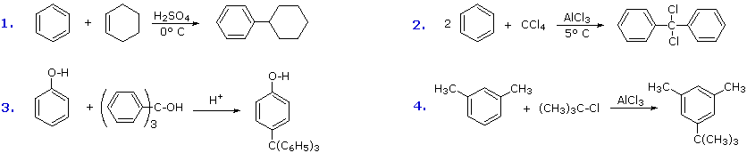

The remarkable stability of the unsaturated hydrocarbon benzene has been discussed in an earlier section. The chemical reactivity of benzene contrasts with that of the alkenes in that substitution reactions occur in preference to addition reactions, as illustrated in the following diagram (some comparable reactions of cyclohexene are shown in the green box).

Many other substitution reactions of benzene have been observed, the five most useful are listed below (chlorination and bromination are the most common halogenation reactions). Since the reagents and conditions employed in these reactions are electrophilic, these reactions are commonly referred to as Electrophilic Aromatic Substitution. The catalysts and co-reagents serve to generate the strong electrophilic species needed to effect the initial step of the substitution. The specific electrophile believed to function in each type of reaction is listed in the right hand column.
A two-step mechanism has been proposed for these electrophilic substitution reactions. In the first, slow or rate-determining, step the electrophile forms a sigma-bond to the benzene ring, generating a positively charged benzenonium intermediate. In the second, fast step, a proton is removed from this intermediate, yielding a substituted benzene ring. The following four-part illustration shows this mechanism for the bromination reaction. Also, an animated diagram may be viewed.

There are four stages to this slide show. These may be viewed repeatedly by continued clicking of the "Next Slide" button.
To see an animated model of this reaction using ball&stick models .
This mechanism for electrophilic aromatic substitution should be considered in context with other mechanisms involving carbocation intermediates. These include SN1 and E1 reactions of alkyl halides, and Brønsted acid addition reactions of alkenes.
To summarize, when carbocation intermediates are formed one can expect them to react further by one or more of the following modes:
1. The cation may bond to a nucleophile to give a substitution or addition product. 2. The cation may transfer a proton to a base, giving a double bond product. 3. The cation may rearrange to a more stable carbocation, and then react by mode #1 or #2.
SN1 and E1 reactions are respective examples of the first two modes of reaction. The second step of alkene addition reactions proceeds by the first mode, and any of these three reactions may exhibit molecular rearrangement if an initial unstable carbocation is formed. The carbocation intermediate in electrophilic aromatic substitution (the benzenonium ion) is stabilized by charge delocalization (resonance) so it is not subject to rearrangement. In principle it could react by either mode 1 or 2, but the energetic advantage of reforming an aromatic ring leads to exclusive reaction by mode 2 (ie. proton loss).
When substituted benzene compounds undergo electrophilic substitution reactions of the kind discussed above, two related features must be considered:
I. The first is the relative reactivity of the compound compared with benzene itself. Experiments have shown that substituents on a benzene ring can influence reactivity in a profound manner. For example, a hydroxy or methoxy substituent increases the rate of electrophilic substitution about ten thousand fold, as illustrated by the case of anisole in the virtual demonstration (above). In contrast, a nitro substituent decreases the ring's reactivity by roughly a million. This activation or deactivation of the benzene ring toward electrophilic substitution may be correlated with the electron donating or electron withdrawing influence of the substituents, as measured by molecular dipole moments. In the following diagram we see that electron donating substituents (blue dipoles) activate the benzene ring toward electrophilic attack, and electron withdrawing substituents (red dipoles) deactivate the ring (make it less reactive to electrophilic attack).

The influence a substituent exerts on the reactivity of a benzene ring may be explained by the interaction of two effects:
The first is the inductive effect of the substituent. Most elements other than metals and carbon have a significantly greater electronegativity than hydrogen. Consequently, substituents in which nitrogen, oxygen and halogen atoms form sigma-bonds to the aromatic ring exert an inductive electron withdrawal, which deactivates the ring (left-hand diagram below). The second effect is the result of conjugation of a substituent function with the aromatic ring. This conjugative interaction facilitates electron pair donation or withdrawal, to or from the benzene ring, in a manner different from the inductive shift. If the atom bonded to the ring has one or more non-bonding valence shell electron pairs, as do nitrogen, oxygen and the halogens, electrons may flow into the aromatic ring by p-π conjugation (resonance), as in the middle diagram. Finally, polar double and triple bonds conjugated with the benzene ring may withdraw electrons, as in the right-hand diagram. Note that in the resonance examples all the contributors are not shown. In both cases the charge distribution in the benzene ring is greatest at sites ortho and para to the substituent. In the case of the nitrogen and oxygen activating groups displayed in the top row of the previous diagram, electron donation by resonance dominates the inductive effect and these compounds show exceptional reactivity in electrophilic substitution reactions. Although halogen atoms have non-bonding valence electron pairs that participate in p-π conjugation, their strong inductive effect predominates, and compounds such as chlorobenzene are less reactive than benzene. The three examples on the left of the bottom row (in the same diagram) are examples of electron withdrawal by conjugation to polar double or triple bonds, and in these cases the inductive effect further enhances the deactivation of the benzene ring. Alkyl substituents such as methyl increase the nucleophilicity of aromatic rings in the same fashion as they act on double bonds.

II. The second factor that becomes important in reactions of substituted benzenes concerns the site at which electrophilic substitution occurs. Since a mono-substituted benzene ring has two equivalent ortho-sites, two equivalent meta-sites and a unique para-site, three possible constitutional isomers may be formed in such a substitution. If reaction occurs equally well at all available sites, the expected statistical mixture of isomeric products would be 40% ortho, 40% meta and 20% para. Again we find that the nature of the substituent influences this product ratio in a dramatic fashion. Bromination of methoxybenzene (anisole) is very fast and gives mainly the para-bromo isomer, accompanied by 10% of the ortho-isomer and only a trace of the meta-isomer. Bromination of nitrobenzene requires strong heating and produces the meta-bromo isomer as the chief product.

Some additional examples of product isomer distribution in other electrophilic substitutions are given in the table below. It is important to note here that the reaction conditions for these substitution reactions are not the same, and must be adjusted to fit the reactivity of the reactant C6H5-Y. The high reactivity of anisole, for example, requires that the first two reactions be conducted under very mild conditions (low temperature and little or no catalyst). The nitrobenzene reactant in the third example is very unreactive, so rather harsh reaction conditions must be used to accomplish that reaction.
Y in C6H5–Y
Reaction
% Ortho-Product
% Meta-Product
% Para-Product
These observations, and many others like them, have led chemists to formulate an empirical classification of the various substituent groups commonly encountered in aromatic substitution reactions. Thus, substituents that activate the benzene ring toward electrophilic attack generally direct substitution to the ortho and para locations. With some exceptions, such as the halogens, deactivating substituents direct substitution to the meta location. The following table summarizes this classification.
Activating Substituentsortho & para-Orientation
Deactivating Substituentsmeta-Orientation
Deactivating Substituentsortho & para-Orientation
The information summarized in the above table is very useful for rationalizing and predicting the course of aromatic substitution reactions, but in practice most chemists find it desirable to understand the underlying physical principles that contribute to this empirical classification. We have already analyzed the activating or deactivating properties of substituents in terms of inductive and resonance effects, and these same factors may be used to rationalize their influence on substitution orientation. The first thing to recognize is that the proportions of ortho, meta and para substitution in a given case reflect the relative rates of substitution at each of these sites. If we use the nitration of benzene as a reference, we can assign the rate of reaction at one of the carbons to be 1.0. Since there are six equivalent carbons in benzene, the total rate would be 6.0. If we examine the nitration of toluene, tert-butylbenzene, chlorobenzene and ethyl benzoate in the same manner, we can assign relative rates to the ortho, meta and para sites in each of these compounds. These relative rates are shown (colored red) in the following illustration, and the total rate given below each structure reflects the 2 to 1 ratio of ortho and meta sites to the para position. The overall relative rates of reaction, referenced to benzene as 1.0, are calculated by dividing by six. Clearly, the alkyl substituents activate the benzene ring in the nitration reaction, and the chlorine and ester substituents deactivate the ring.

From rate data of this kind, it is a simple matter to calculate the proportions of the three substitution isomers. Toluene gives 58.5% ortho-nitrotoluene, 37% para-nitrotoluene and only 4.5% of the meta isomer. The increased bulk of the tert-butyl group hinders attack at the ortho-sites, the overall product mixture being 16% ortho, 8% meta and 75% para-nitro product. Although chlorobenzene is much less reactive than benzene, the rate of ortho and para-substitution greatly exceeds that of meta-substitution, giving a product mixture of 30% ortho and 70% para-nitrochlorobenzene. Finally, the benzoic ester gave predominantly the meta-nitro product (73%) accompanied by the ortho (22%) and para (5%) isomers, as shown by the relative rates. Equivalent rate and product studies for other substitution reactions lead to similar conclusions. For example, electrophilic chlorination of toluene occurs hundreds of times faster than chlorination of benzene, but the relative rates are such that the products are 60% ortho-chlorotoluene, 39% para and 1% meta-isomers, a ratio similar to that observed for nitration.
The manner in which specific substituents influence the orientation of electrophilic substitution of a benzene ring is shown in the following interactive diagram. As noted on the opening illustration, the product-determining step in the substitution mechanism is the first step, which is also the slow or rate determining step. It is not surprising, therefore, that there is a rough correlation between the rate-enhancing effect of a substituent and its site directing influence. The exact influence of a given substituent is best seen by looking at its interactions with the delocalized positive charge on the benzenonium intermediates generated by bonding to the electrophile at each of the three substitution sites. This can be done for seven representative substituents by using the selection buttons underneath the diagram.

In the case of alkyl substituents, charge stabilization is greatest when the alkyl group is bonded to one of the positively charged carbons of the benzenonium intermediate. This happens only for ortho and para electrophilic attack, so such substituents favor formation of those products. Interestingly, primary alkyl substituents, especially methyl, provide greater stabilization of an adjacent charge than do more substituted groups (note the greater reactivity of toluene compared with tert-butylbenzene). Nitro (NO2), sulfonic acid (SO3H) and carbonyl (C=O) substituents have a full or partial positive charge on the atom bonded to the aromatic ring. Structures in which like-charges are close to each other are destabilized by charge repulsion, so these substituents inhibit ortho and para substitution more than meta substitution. Consequently, meta-products predominate when electrophilic substitution is forced to occur. Halogen ( X ), OR and NR2 substituents all exert a destabilizing inductive effect on an adjacent positive charge, due to the high electronegativity of the substituent atoms. By itself, this would favor meta-substitution; however, these substituent atoms all have non-bonding valence electron pairs which serve to stabilize an adjacent positive charge by pi-bonding, with resulting delocalization of charge. Consequently, all these substituents direct substitution to ortho and para sites. The balance between inductive electron withdrawal and p-π conjugation is such that the nitrogen and oxygen substituents have an overall stabilizing influence on the benzenonium intermediate and increase the rate of substitution markedly; whereas halogen substituents have an overall destabilizing influence.
The conditions commonly used for the aromatic substitution reactions discussed here are repeated in the table on the right. The electrophilic reactivity of these different reagents varies. We find, for example, that nitration of nitrobenzene occurs smoothly at 95 ºC, giving meta-dinitrobenzene, whereas bromination of nitrobenzene (ferric catalyst) requires a temperature of 140 ºC. Also, as noted earlier, toluene undergoes nitration about 25 times faster than benzene, but chlorination of toluene is over 500 times faster than that of benzene. From this we may conclude that the nitration reagent is more reactive and less selective than the halogenation reagents. Both sulfonation and nitration yield water as a by-product. This does not significantly affect the nitration reaction (note the presence of sulfuric acid as a dehydrating agent), but sulfonation is reversible and is driven to completion by addition of sulfur trioxide, which converts the water to sulfuric acid. The reversibility of the sulfonation reaction is occasionally useful for removing this functional group. The Friedel-Crafts acylation reagent is normally composed of an acyl halide or anhydride mixed with a Lewis acid catalyst such as AlCl3. This produces an acylium cation, R-C≡O(+), or a related species. Such electrophiles are not exceptionally reactive, so the acylation reaction is generally restricted to aromatic systems that are at least as reactive as chlorobenzene. Carbon disulfide is often used as a solvent, since it is unreactive and is easily removed from the product. If the substrate is a very reactive benzene derivative, such as anisole, carboxylic esters or acids may be the source of the acylating electrophile. Some examples of Friedel-Crafts acylation reactions are shown in the following diagram. The first demonstrates that unusual acylating agents may be used as reactants. The second makes use of an anhydride acylating reagent, and the third illustrates the ease with which anisole reacts, as noted earlier. The H4P2O7 reagent used here is an anhydride of phosphoric acid called pyrophosphoric acid. Finally, the fourth example illustrates several important points. Since the nitro group is a powerful deactivating substituent, Friedel-Crafts acylation of nitrobenzene does not take place under any conditions. However, the presence of a second strongly-activating substituent group permits acylation; the site of reaction is that favored by both substituents.

A common characteristic of the halogenation, nitration, sulfonation and acylation reactions is that they introduce a deactivating substituent on the benzene ring. As a result, we do not normally have to worry about disubstitution products being formed. Friedel-Crafts alkylation, on the other hand, introduces an activating substituent (an alkyl group), so more than one substitution may take place. If benzene is to be alkylated, as in the following synthesis of tert-butylbenzene, the mono-alkylated product is favored by using a large excess of this reactant. When the molar ratio of benzene to alkyl halide falls below 1:1, para-ditert-butylbenzene becomes the major product.
C6H6 (large excess) + (CH3)3C-Cl + AlCl3 ——> C6H5-C(CH3)3 + HCl
The carbocation electrophiles required for alkylation may be generated from alkyl halides (as above), alkenes + strong acid or alcohols + strong acid. Since 1º-carbocations are prone to rearrangement, it is usually not possible to introduce 1º-alkyl substituents larger than ethyl by Friedel-Crafts alkylation. For example, reaction of excess benzene with 1-chloropropane and aluminum chloride gives a good yield of isopropylbenzene (cumene).
Additional examples of Friedel-Crafts alkylation reactions are shown in the following diagram.

The first and third examples show how alkenes and alcohols may be the source of the electrophilic carbocation reactant. The triphenylmethyl cation generated in the third case is relatively unreactive, due to extensive resonance charge delocalization, and only substitutes highly activated aromatic rings. The second example shows an interesting case in which a polychlororeactant is used as the alkylating agent. A four fold excess of carbon tetrachloride is used to avoid tri-alkylation of this reagent, a process that is retarded by steric hindrance. The fourth example illustrates the poor orientational selectivity often found in alkylation reactions of activated benzene rings. The bulky tert-butyl group ends up attached to the reactive meta-xylene ring at the least hindered site. This may not be the site of initial bonding, since polyalkylbenzenes rearrange under Friedel-Crafts conditions (para-dipropylbenzene rearranges to meta-dipropylbenzene on heating with AlCl3).
A practical concern in the use of electrophilic aromatic substitution reactions in synthesis is the separation of isomer mixtures. This is particularly true for cases of ortho-para substitution, which often produce significant amounts of the minor isomer. As a rule, para-isomers predominate except for some reactions of toluene and related alkyl benzenes. Separation of these mixtures is aided by the fact that para-isomers have significantly higher melting points than their ortho counterparts; consequently, fractional crystallization is often an effective isolation technique. Since meta-substitution favors a single product, separation of trace isomers is normally not a problem.
Some substituents enable the ortho-metallation of an aromatic ring. This then permits the introduction of other groups. For a description of this procedure Click Here.
Part IISubstitution, Elimination & AdditionReactions of Complex Aromatic Compounds
This page is the property of The Edvibe Team. Comments, questions and errors should be sent to contact@edvibe.co.ke. These pages are provided to the IOCD to assist in capacity building in chemical education. 05/05/2013